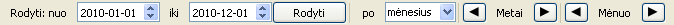

Apkrovų skaičiavimas
- Intervalo nustatymo įrankių juostoje pasirinkti norimas intervalo pradžios datą.
- Intervalo nustatymo įrankių juostoje pasirinkti norimas intervalo pabaigos datą.
- Intervalo nustatymo įrankių juostoje pasirinkti į kokius mažesnius intervalus skaidyti pasirinktą intervalą.
- Spausti mygtuką „Rodyti“.
Prognozių skaičiavimas
- Pasirinkti kortelę „Planuojami kiekiai“.
- Kortelėje „Planuojami kiekiai“ suvesti planuojamus paramos priemonių kiekius.
- Intervalo nustatymo įrankių juostoje pasirinkti norimas intervalo pradžios datą.
- Intervalo nustatymo įrankių juostoje pasirinkti norimas intervalo pabaigos datą.
- Intervalo nustatymo įrankių juostoje pasirinkti į kokius mažesnius intervalus skaidyti pasirinktą intervalą.
- Spausti mygtuką „Rodyti“.